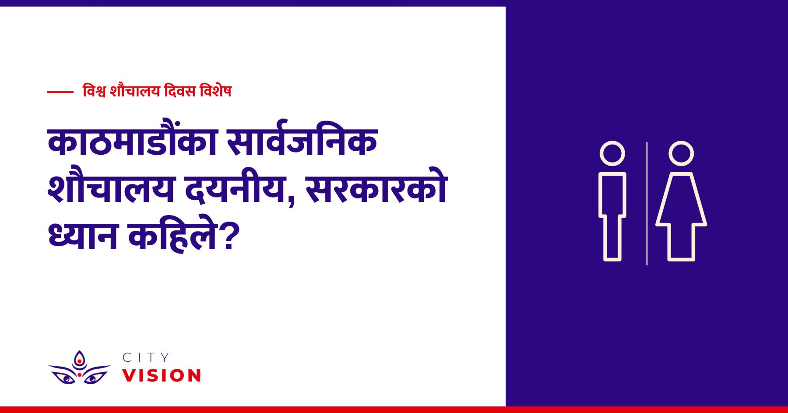

काठमाडौंका सार्वजनिक शौचालय दयनीय: जेनजी आन्दोलनपछिको सरकारको ध्यान कहिले पुग्ला?
विश्व शौचालय दिवसका अवसरमा काठमाडौंका सार्वजनिक शौचालयको दयनीय अवस्था फेरि सतहमा आएको छ। जेनजी आन्दोलनपछि बनेको सरकारको आठ महिना बितिसक्दा पनि यस्तो आधारभूत सेवामा सुधार नदेखिँदा प्रश्न उठेको छ।

सिटी भिजन टिभी अस्ट्रेलिया | नेपाली समाचार
आज विश्व शौचालय दिवस (नोभेम्बर १९)। तर राजधानी काठमाडौंका सार्वजनिक शौचालयको अवस्था हेर्दा यो दिवस मनाउने भन्दा पनि चिन्ता गर्नुपर्ने अवस्था छ।
काठमाडौंका धेरैजसो सार्वजनिक शौचालय सरसफाइ र व्यवस्थापनको अभावमा प्रयोग गर्नै नसकिने अवस्थामा पुगेका छन्। कतिपय शौचालयभित्र पस्नसमेत कठिन छ। अर्कोतर्फ, सहरका मुख्य र भीडभाड हुने स्थानहरूमा पर्याप्त शौचालय नै छैनन्। विश्व शौचालय दिवसको अवसरमा रातोपाटीले सार्वजनिक गरेको समाचार र तस्बिरहरूले यही वास्तविकता उजागर गरेका छन्।
जेनजी आन्दोलनले जगाएको अपेक्षा
जेनजी आन्दोलनले देशमा परिवर्तन, सुशासन र जवाफदेही सरकारको आशा जगाएको थियो। आन्दोलनपछि बनेको नयाँ सरकारसँग जनताले ठूला विकास योजना मात्र होइन, दैनिक जीवनसँग जोडिएका साना तर अत्यन्तै महत्त्वपूर्ण समस्याको समाधान पनि अपेक्षा गरेका छन्।
तर सरकार गठन भएको आठ महिना बितिसक्दा पनि सार्वजनिक शौचालयजस्तो आधारभूत सेवामा अपेक्षित सुधार देखिएको छैन।
पूर्वमेयर नै प्रधानमन्त्री, तर प्रश्न उस्तै
प्रधानमन्त्री बालेन्द्र शाह (बालेन) यसअघि काठमाडौं महानगरपालिकाका मेयर भइसकेका व्यक्ति हुन्। काठमाडौंको सहरी व्यवस्थापन र सार्वजनिक सेवाका समस्या उहाँले नजिकबाट बुझेको हुनुपर्छ। त्यसैले सार्वजनिक शौचालयको व्यवस्थापन र विस्तारजस्तो आधारभूत विषयमा सरकारको ध्यान किन पुग्न सकेन भन्ने प्रश्न स्वाभाविक रूपमा उठेको छ।
साना सुधार, ठूलो सन्देश
देशको विकास ठूला भाषण र घोषणाले मात्र हुँदैन। सफा शौचालय, पर्याप्त संख्यामा शौचालय र सबै नागरिकले सहज रूपमा प्रयोग गर्न पाउने व्यवस्था पनि सुशासन र विकासकै महत्त्वपूर्ण सूचक हुन्।
जनताले जेनजी आन्दोलनमार्फत खोजेको परिवर्तन यस्तै दैनिक जीवनमा महसुस हुने साना सुधार पनि हो। अब प्रश्न यही छ: नयाँ सरकारले यस्ता आधारभूत समस्यालाई प्राथमिकतामा राख्छ कि राख्दैन?